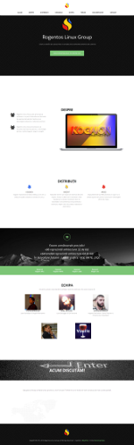
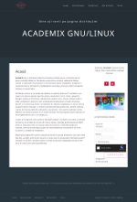
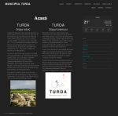
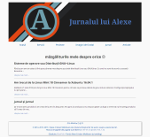
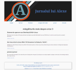

Proiectele de care mă ocup, când mai am și eu timp
Dezvoltare și întreținere situri
 
  

Proiecte proprii
- gnulinux.ro, municipiulturda.ro, crism.ro/jurnal.html
- AGGA Menu - AGGA Menu este o iconiță creată doar pentru acele medii care permit schimbarea iconiței de la meniu.
- AGGA Plymounth - AGGA Plymounth este o temă pentru boot splash care are la baza tema Ozon Plymouth, tema dezvoltată de echipele Nitrux și Numix pentru distribuția Ozon OS.
- AGGA Theme - AGGA Theme este o temă pentru GTK2, GTK3, Metacity, Openbox, Unity, Xfce care are la bază tema Numix.
- Imagini de fundal - Am creat câteva imagini care se pot pune pe fundal la mediul de lucru.
Proiecte inactive
- AGGA Icons - AGGA Icons este un set de iconițe care au avut la bază mai multe seturi de iconițe și din cauza unor licențe acest proiect a fost închis.
- Comunitatea Gentoo Land - Comunitatea Gentoo Land a fost o comunitate pentru utilizatori români de Gentoo și derivate care includea un sit, wiki și canale de IRC.
- Xubuntu România remix - Xubuntu România remix a fost o distribuție românească care avea la bază distribuția Xubuntu. Accest proiect l-am închis după prima versiune a distribuției.
- Motor de căutare pentru GNU+Linux
- proiectul inițial a avut la bază Google Search cu opțiune de a căuta doar în siturile românești de GNU+Linux.
- înainte ca proiectul să fie închis s-a trecut la motorul de căutare Ixquick, motor de căutre care nu mai avea opțiuni de cautare în siturile românești.
- Gentoo Land Map - Gentoo Land Map (gentoo-land.org) a fost o hartă internațională pentru utilizatori de gentoo și derivate din gentoo.
- Rogentos/Kogaion - Am contribuit cu modificări minore în codul distribuției Rogentos/Kogaion.